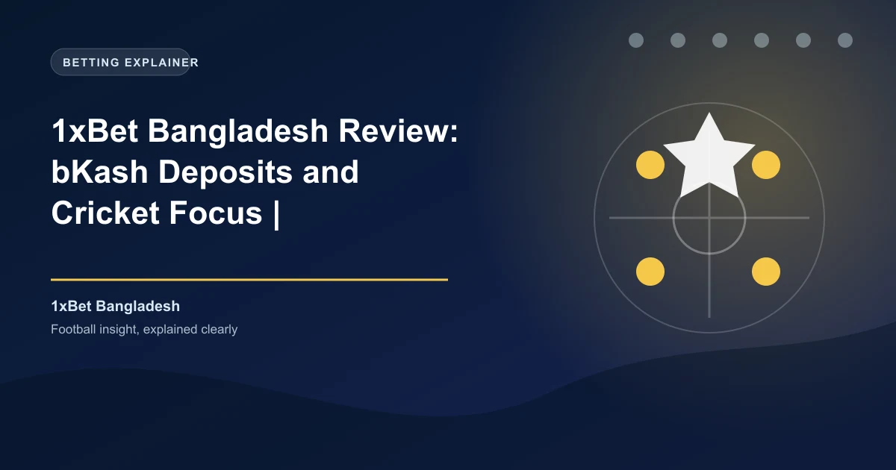

Bangladesh is one of the world's most cricket-passionate nations, with an estimated 30 million active cricket fans and a rapidly growing online betting market. Despite the enormous demand, online gambling is technically illegal under the Public Gambling Act of 1867 (as inherited from British colonial law) and the Bangladesh Penal Code (Section 294A). However, enforcement is limited, and offshore platforms like 1xBet have established a significant presence. This review covers everything Bangladeshi bettors need to know.
Bangladesh's gambling laws date back to the British colonial era. The Public Gambling Act of 1867, inherited at independence in 1971, prohibits operating or visiting a "common gaming house." The Bangladesh Penal Code (Section 294A) criminalizes operating or managing any place for gambling. However, these laws were written before the internet and do not explicitly address online gambling.
The legal position is that online gambling is technically illegal in Bangladesh, as it falls under the broad prohibition of gambling activities. However, there are no specific provisions that target individual online bettors, and enforcement against individuals using offshore platforms is extremely rare. The government has focused its enforcement efforts on physical gambling operations rather than individual online bettors.
1xBet operates in Bangladesh under its Curaçao eGaming license (#OGL/2024/1262/0493), which is an internationally recognized gambling license but does not constitute authorization from any Bangladeshi regulatory body. There is no Bangladeshi gambling regulator that licenses online sports betting operators.
Online gambling is technically illegal in Bangladesh under existing colonial-era legislation. While enforcement against individual bettors is extremely rare, the legal risk exists. 1xBet does not hold a Bangladeshi license and is not regulated by any Bangladeshi authority. Bangladeshi bettors should understand the legal risks before using offshore betting platforms.
1xBet Bangladesh offers new players a 100% first deposit bonus up to 12,000 BDT. Here is the breakdown:
| Detail | Value |
|---|---|
| Welcome Bonus | 100% first deposit bonus |
| Maximum Bonus | 12,000 BDT |
| Minimum Deposit | 120 BDT |
| Wagering Requirement | 5x in accumulator bets |
| Minimum Odds per Leg | 1.40 |
| Minimum Selections | 3 per accumulator |
| Validity Period | 30 days from registration |
The 120 BDT minimum deposit makes 1xBet accessible to virtually all Bangladeshi bettors. The 100% match doubles your starting bankroll, giving you 240 BDT to bet with from a 120 BDT deposit. While the maximum bonus of 12,000 BDT (~$105 USD) is lower than in some other markets, the low minimum deposit and 5x wagering requirement make it achievable for casual bettors.
To claim the bonus, register a new account, select the welcome bonus during registration, and deposit at least 120 BDT via bKash, Nagad, UPay, bank transfer, or cryptocurrency. The bonus is credited instantly and must be wagered through accumulator bets with at least three selections at minimum odds of 1.40 per leg within 30 days.
Beyond the welcome offer, 1xBet Bangladesh runs cricket-specific promotions during the IPL season and other major tournaments, including free bet offers, accumulator boosts, and cashback promotions on losing cricket bets. The platform also offers regular promotions for football and other sports.
1xBet Bangladesh supports the mobile financial services that dominate Bangladeshi payments. With mobile financial service (MFS) penetration exceeding 50% of the adult population, according to the Bangladesh Bank, bKash and Nagad are the primary financial infrastructure for millions of Bangladeshis.
bKash is the largest mobile financial service in Bangladesh with over 67 million users. 1xBet supports bKash deposits with a minimum of just 120 BDT. The deposit process is straightforward: use the 1xBet bKash payment number displayed on the deposit page, send the amount via bKash, and enter the transaction ID on 1xBet to confirm. Funds appear in your 1xBet account within minutes. bKash's mobile financial platform processes billions of Taka in transactions monthly, making it the most trusted payment method in Bangladesh.
Nagad is the second-largest MFS in Bangladesh, operated by the Bangladesh Post Office. 1xBet supports Nagad deposits with the same low minimum and quick processing as bKash. The deposit process mirrors bKash: use the Nagad payment number, send the amount, and enter the transaction ID to confirm.
UPay is a newer mobile financial service gaining traction in Bangladesh. 1xBet also supports UPay deposits, providing an additional option for bettors who prefer this platform.
Bangladesh's Bangladesh Bank has issued circulars restricting the use of international credit and debit cards for online gambling transactions. This makes cryptocurrency a particularly valuable deposit method for Bangladeshi bettors, as it bypasses traditional banking restrictions. 1xBet's support for 40+ cryptocurrencies provides a reliable alternative for depositing and withdrawing funds.
1xBet Bangladesh processes withdrawals primarily through bKash and Nagad, with a minimum withdrawal of 500 BDT:
| Method | Minimum Withdrawal | Processing Time |
|---|---|---|
| bKash | 500 BDT | 15 minutes |
| Nagad | 500 BDT | 15 minutes |
| UPay | 500 BDT | 15 minutes |
| Bank Transfer | 500 BDT | 1-24 hours |
| Cryptocurrency | 500 BDT (equivalent) | 15 minutes |
1xBet charges no internal withdrawal fees. The 15-minute processing time for bKash and Nagad withdrawals makes 1xBet one of the fastest-paying bookmakers in Bangladesh. KYC verification is required before the first withdrawal and involves submitting a government-issued ID (national ID card or passport) and proof of address.
Cricket is the primary focus of 1xBet's Bangladeshi operation, and the platform delivers exceptional depth in cricket markets. With 600+ markets per match in major tournaments, Bangladeshi bettors have extensive options for wagering on their favorite sport.
The Indian Premier League (IPL) is immensely popular in Bangladesh, where cricket fans passionately follow every match. 1xBet offers 600+ markets per IPL match, including match winner, top batsman, top bowler, total sixes, total fours, player of the match, powerplay score, over/under totals, and ball-by-ball betting. The platform also provides IPL-specific promotions and enhanced odds during the tournament season.
1xBet covers the Bangladesh Premier League (BPL) with comprehensive market coverage. The BPL is Bangladesh's premier T20 franchise cricket league, and 1xBet provides markets for every match including match winner, top performer, over/under totals, and detailed player props. This domestic league coverage is a significant advantage for Bangladeshi bettors.
The live betting section at 1xBet Bangladesh is extensive, with thousands of live events available daily. Cricket live betting is particularly popular, with ball-by-ball markets available for IPL, BPL, and international matches. The live interface provides real-time score updates, statistical overlays, and dynamic odds.
1xBet offers live streaming on select events for registered users with a positive account balance. The cash-out feature is available on both pre-match and live bets, allowing Bangladeshi bettors to secure profits before events conclude.
1xBet offers a dedicated mobile app for Android devices, available as a direct APK download from the 1xBet Bangladesh website. The app is lightweight and optimized for the Android devices commonly used in Bangladesh, including budget smartphones.
The mobile app provides full access to all betting markets, live streaming, cash-out, bKash deposits and withdrawals, and account management. Given that mobile betting accounts for the vast majority of all online wagers in Bangladesh according to Statista, the app's performance is critical.
The app supports Bengali and English language, biometric login, and works efficiently on both WiFi and mobile data connections, including 3G networks common outside Dhaka and Chittagong.
1xBet Bangladesh provides 24/7 customer support through multiple channels:
Support is available in Bengali and English, catering to Bangladeshi bettors in their preferred language. According to Trustpilot, 1xBet's customer support ratings vary, with positive reviews highlighting cricket market knowledge and bKash expertise.
1xBet provides responsible gambling tools including deposit limits, session time limits, self-exclusion, and reality checks. However, as an offshore Curaçao-licensed operator with no Bangladeshi license, 1xBet is not subject to any Bangladeshi responsible gambling regulations. There is no national self-exclusion registry in Bangladesh.
With bKash and Nagad deposits being so easy to make, Bangladeshi bettors should take extra personal responsibility for managing their gambling activity. Setting deposit limits from the start is strongly recommended. The ease of mobile financial service deposits can make impulsive betting a real risk.
Registration on 1xBet Bangladesh is quick and can be completed in under two minutes:
You must be at least 18 years old and complete KYC verification before your first withdrawal. KYC requires a government-issued ID (national ID card, passport, or birth certificate) and proof of address.
1xBet offers a compelling product for Bangladeshi bettors who are comfortable with the offshore licensing arrangement. The bKash and Nagad deposit integration, Bengali language support, and exceptional cricket market coverage (600+ markets per match) make it one of the most Bangladesh-friendly offshore platforms available. The 100% welcome bonus up to 12,000 BDT and the 120 BDT minimum deposit are accessible to all bettors.
The primary concern is the legal grey area. Online gambling is technically illegal in Bangladesh, and 1xBet holds no Bangladeshi license. Bangladeshi bettors should understand the legal landscape and accept the limitations of using an offshore platform. For cricket enthusiasts who want comprehensive market coverage and convenient Bangladeshi payment methods, 1xBet delivers strong value with the caveat that regulatory protections are limited.
Ready to bet? Check our free daily cricket predictions for value bets across the IPL, BPL, and international fixtures.